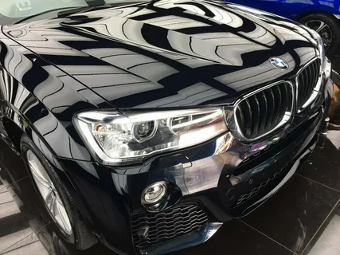

КЕРАМИЧЕСКОЕ ПОКРЫТИЕ
Защитите автомобиль с помощью передовых керамических покрытий от студии №1 в Бишкеке.

Полное керамическое покрытие
Защита кузова, стекол и колес от царапин, грязи и ультрафиолетового излучения.
Подробнее →Что такое керамическое покрытие
Керамическое покрытие создает прочный защитный слой на кузове, стеклах и колесах автомобиля. Оно защищает от мелких царапин, реагентов и ультрафиолета, сохраняя идеальный блеск и чистоту автомобиля.
Мы используем только высококачественные материалы, обеспечивающие долговечность и гидрофобный эффект, облегчая последующий уход за автомобилем.


Наши услуги

Керамическое покрытие кузова
Надёжная защита лакокрасочного покрытия от мелких повреждений и ультрафиолета.
Подробнее
Керамическое покрытие стекол
Отталкивает воду и загрязнения, улучшает видимость и упрощает уход за стеклами.
Подробнее
Керамическое покрытие колес
Защита дисков от пыли, реагентов и загрязнений с облегчением последующей очистки.
Подробнее
Нанопокрытие для салона
Создаёт невидимую защитную плёнку на тканях, коже и пластике, продлевая срок службы интерьера.
Этапы работы

Подготовка автомобиля
Тщательная мойка и обезжиривание кузова, стекол и колес для идеальной адгезии покрытия.

Нанесение покрытия
Аккуратное нанесение керамического слоя на кузов, стекла и диски для долговечной защиты.

Финальная проверка
Контроль качества и проверка нанесенного покрытия на всех поверхностях автомобиля.
Продолжительность работы
Нанесение керамического покрытия занимает от 1 до 3 дней в зависимости от состояния лакокрасочного покрытия, количества слоёв и технологии сушки. Процесс включает детальную мойку, полировку, нанесение керамики и финальную полимеризацию состава.
💰 Стоимость услуги
Полное керамическое покрытие — от 20 000
₽.
Цена зависит от типа покрытия и состояния автомобиля.
Свяжитесь с нами для точной оценки.
Примеры наших работ

Отзывы наших клиентов
«После нанесения керамики автомобиль блестит, как новый. Абсолютно довольна качеством!»
«Керамика держится отлично, кузов защищен, стекла чистые даже в дождь.»
«Прекрасное покрытие, автомобиль выглядит как новый, все поверхности идеально чистые.»